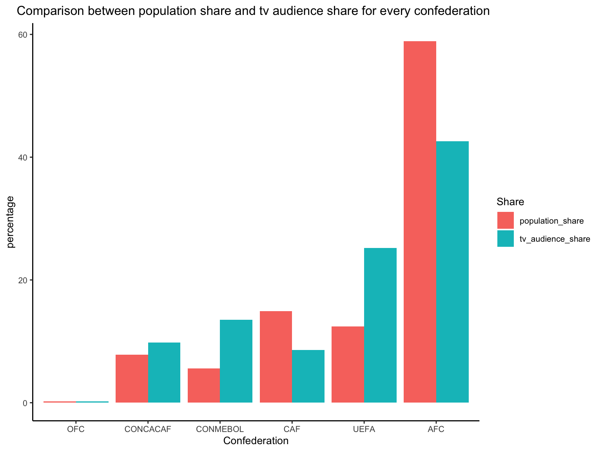

Motive
Sports occupies a vital role in our lives. It keeps us fit, healthy and makes us active. The secret to having a healthy and positive lifestyle is to have a positive mind and body.Apart from keeping a healthy body and mind, sports also helps us in alerting our senses, keeps us aware and an undaunting personality and outlook on life. Hence, sports has a multi-faceted role in our lives. Football being a major part of my life I decided to choose data-set related to FIFA audience to build my first Blog. For the purpose of analyzing and explaining the data I decided to explore the data by confederations.
Data Desription
The FIFA audience data set provides information about the different FIFA confederations (competitions) and all the countries that participate in them. It also shows each country’s population share and FIFA TV audience share in the world. I have analysed and to tried show a difference betwween both the variables for all the competitions. The dataset also provides vital information about each country’s weighted share to GDP.
Variables
- country: FIFA member country
- confederation: Confederation to which country belongs
- population_share: Country’s share of global population (percentage)
- tv_audience_share: Country’s share of global world cup TV Audience (percentage)
- gdp_weighted_share: Country’s GDP-weighted audience share (percentage)
Data alteration
The graph @ref(fig:plot) shows the difference between cumulative population share(%) and TV audience share(%) of countries participation in different confederations. This is achieved by grouping the data by confederation.

Conclusion
Asian countries contribute a lot to the world’s population which helps us explain as to why the participants of AFC were the majority viewers of FIFA 2010. UEFA being the most popular competition on club-level football, explains why their TV audience share is second after AFC despite having such low contribution to world’s population. The same can be said about CONMEBOL as they are third in population share. OFC had almost negligible impact on both the variables.
Variables
- FIFA_members: Proportion of countries per confederation (percentage)
- GLOBAL POP: Population share in the world contributed by countries per confederation (percentage)
- WORLD CUP TV AUDIENCE: TV audience share in the world contributed by countries per confederation (percentage)
- GDP-WEIGHTED TV AUDIENCE: Confederation’s GDP-weighted audience share (percentage)
Data alteration
For each confederation I have calculated the total contribution in population share, TV audience share and GDP-weighted share to show the overall contribution of each confederation.
We can aggregate these numbers by each of FIFA’s six continental confederations and compare them to the share of FIFA members each confederation has.
| Confederation | FIFA_members | GLOBAL POP | WORLD CUP TV AUDIENCE | GDP-WEIGHTED TV AUDIENCE |
|---|---|---|---|---|
| AFC (Asia) | 22.513089 | 59.0180361 | 42.6426426 | 31.7907445 |
| CAF (Africa) | 26.178010 | 14.9298597 | 8.6086086 | 2.6156942 |
| CONCACAF (N. America) | 15.706806 | 7.8156313 | 9.8098098 | 15.8953722 |
| CONMEBOL (S. America) | 5.235602 | 5.6112224 | 13.5135135 | 10.3621730 |
| OFC (Oceania) | 6.282723 | 0.2004008 | 0.2002002 | 0.1006036 |
| UEFA (Europe) | 24.083770 | 12.4248497 | 25.2252252 | 39.2354125 |
Each Confederation explained
Conclusion
In 2010, African countries represented about 25 percent of FIFA members but (even though the World Cup was played in Africa) only about 3 percent of the tournament’s GDP-weighted TV audience. By contrast, Asia and South America are underrepresented in FIFA. So is UEFA if you measure it by its GDP-weighted TV audience, although not if you measure it by population. You can argue, of course, that it isn’t a bad thing for FIFA to give more representation to developing countries. It doesn’t square with FIFA’s decision to give the 2022 World Cup to Qatar, which has the world’s highest per-capita GDP by some estimates. (Silver, 2017)
References:
- Silver, N. (2017, April 21). How To Break FIFA. FiveThirtyEight. Retrieved September 6, 2022, from https://fivethirtyeight.com/features/how-to-break-fifa/
- Wickham et al., (2019). Welcome to the tidyverse. Journal of Open Source Software, 4(43), 1686, https://doi.org/10.21105/joss.01686
- Hao Zhu (2021). kableExtra: Construct Complex Table with ‘kable’ and Pipe Syntax. R package version 1.3.4. https://CRAN.R-project.org/package=kableExtra
- (2022). Retrieved September 6, 2022, from Wikimedia.org website: https://upload.wikimedia.org/wikipedia/commons/a/a8/World_Map_FIFA2.svg
- Fifa Football (soccer) Confederations Emblems And Logos Editorial Stock Photo - Illustration of logotype, game: 65678403. (n.d.). Retrieved September 6, 2022, from www.dreamstime.com website: https://www.dreamstime.com/editorial-stock-photo-fifa-football-soccer-confederations-emblems-logos-collection-vector-associations-white-tablet-rusty-wooden-image65678403